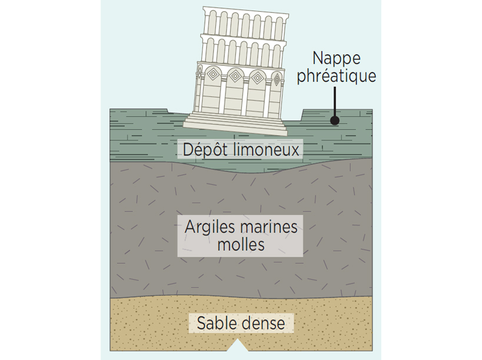
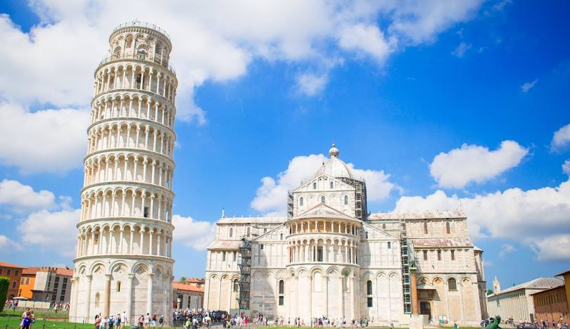

La tour de Pise (en italien : torre di Pisa) est le campanile de la cathédrale Notre-Dame de l’Assomption de Pise, en Toscane (Italie). Elle est située à proximité du chevet de la cathédrale et fait partie des monuments de la piazza dei Miracoli (la « place des Miracles »), inscrite au patrimoine mondial de l'UNESCO. Sa construction débuta en 1173. Mondialement connue, elle est un des symboles de l’Italie et l’emblème de la ville de Pise.
Construite dans le style roman, la tour est haute de 55,86 mètres côté sud et de 58,36 m1 côté nord du fait de son inclinaison, et a un diamètre externe de 15 mètres à la base. Sa masse estimée est de 14 500 tonnes2.
Cette tour creuse, de diamètre interne de 7,4 mètres (4,2 m au sommet), est composée de deux cylindres de pierre concentriques entre lesquels court un escalier en colimaçon de 293 marches. On a affiné les murs de la partie affaissée de la tour afin d’en freiner la chute. Entre chacun des 8 étages, des colonnes de marbre de Carrare servent de support, et de nombreuses sculptures sont visibles. La porte est décorée de sculptures d’animaux et autres grotesques de style roman
La construction de l’édifice commence le 9 août 1173, une dizaine d’années après le début des travaux de la cathédrale, et s’étale sur deux siècles. Dès la fin de l’ajout du troisième étage vers 1178, la tour avait commencé à pencher, et la construction est interrompue pendant 90 ans3.
À partir de 1272 les quatre étages supérieurs sont donc construits en diagonale pour compenser l’inclinaison. La construction s’interrompt alors à nouveau de 1301 à 1350 et ce n’est qu’en 1372 que le dernier étage des cloches, de diamètre moins important, est achevé.


Quelques faits intéréssants sur le Colisée De Rome
1.Elle faisait partie des 7 merveilles du monde
Le titre de « merveilles du monde » est généralement attribué à des monuments uniques qui ont appartenu au monde antique. Bien qu'elle ne soit qu'une reproduction de l'époque médiévale, la tour de Pise a été désignée comme l'une des sept merveilles du monde pour son architecture romane exceptionnelle, sa taille et son inclinaison extraordinaire tout en conservant sa stabilité.
2.L'ingénieur chargé de la remise en état de la tour n'était pas un expert en mécanique des sols
L'ingénieur John Burland, chargé de superviser ce projet de construction de la tour de Pise, s'est révélé être un mauvais élève. En effet, il a ouvertement admis que la mécanique des sols, la branche de l'ingénierie qui a joué un rôle essentiel dans la stabilisation de la tour, était sa pire matière pendant ses études de premier cycle à l'université de Witwatersrand, à Johannesburg. Cela a conduit à des plans douteux de l'immeuble, mais Burland a finalement changé de carrière et a permis d'éviter l'effondrement complet de la tour.
3.Mussolini accentue l'inclinaison de la tour
Le père fondateur du fascisme et dictateur de l'Italie, Benito Mussolini, aurait aggravé une situation déjà problématique. En 1934, il a déclaré qu'il avait honte de la tour de Pise, qualifiant sa construction et sa conception de honte nationale. Afin de remédier à la situation, il ordonne que des efforts soient déployés pour redresser la tour et que des centaines de trous soient percés dans les fondations de la tour. L'idée était de pomper des tonnes de coulis dans le but de corriger son inclinaison, mais au lieu de cela, la base s'est alourdie et la tour s'est inclinée encore plus qu'avant.